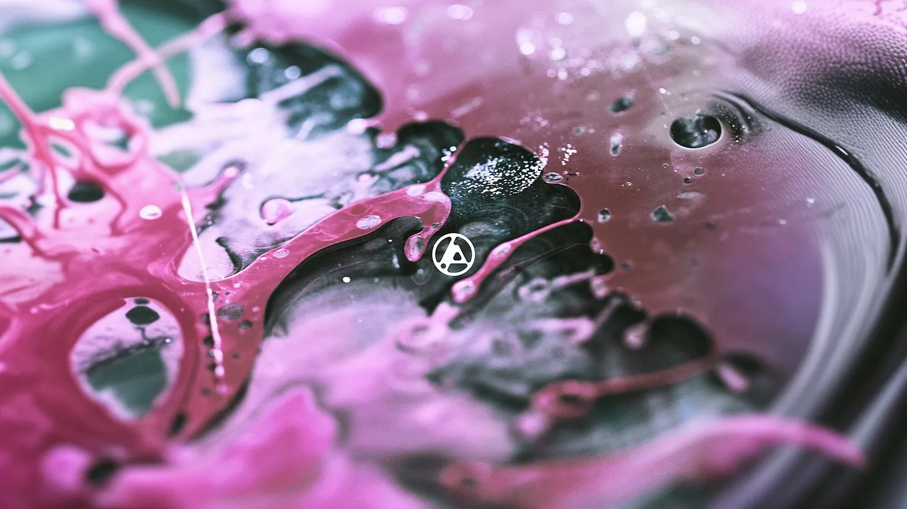

NEWS
NOVÝ PŘÍSPĚVEK
WAVE
Wave Production je česká produkční a eventová skupina působící od roku 2020. Spojujeme hudbu, techniku a lidi na jednom místě.
Resident DJ a zakladatel Wave Production. Specializuje se na techno, bass music a experimentální elektroniku. Pravidelně hraje na tuzemských festivalech i klubových akcích.
Organizace pravidelných eventů v Hronově a okolí. Od komorních klubových večerů po venkovní festivaly — Wave Production zajišťuje kompletní produkci, zvuk a světla.
Půjčujeme profesionální zvukovou a světelnou techniku pro akce všech velikostí. Reproduktory, mixpulty, světelné rigy — vše dostupné k zapůjčení s možností technické podpory na místě.
NEZÁVAZNÁ POPTÁVKATHE BASSLINE FANATIQZ
Česká bass music komunita. Tvoříme, hrajeme, žijeme hudbu.
LIVE
ZÁZNAMY
ARCHIVE
STORE

ABOUT
Wave Production vznikla z jednoduché myšlenky — dát lidem, kteří milují hudbu, prostor kde mohou tvořit, hrát a zažívat něco skutečného. Od roku 2020 budujeme komunitu kolem bass music, techna a elektronické scény v Čechách.
Pod hlavičkou Wave Production působí DJ Dlabac Jan, eventová sekce Hronov a půjčovna profesionálního vybavení. Spolupracujeme s kolektivem The Bassline Fanatiqz, který sdružuje přes deset DJs z celé republiky.
Naše live akce jsou více než koncerty — jsou to setkání komunity. Každý event stavíme s péčí o zvuk, atmosféru a zážitek, který přesahuje samotnou hudbu.
Wave Production je otevřená platforma. Pokud máš chuť se zapojit — jako DJ, fotograf, organizátor nebo prostě jako fanoušek — jsme tu pro tebe.
KONTAKT